透明化分析页面交互说明
用于给产研团队枚举不同的交互细节，前端实现的一些规则
商品经营结论 暂不能判断
标题状态 Tag 规则
| 触发条件 | 展示文案 | 源力 Tag 色值 | 优先级 |
|---|---|---|---|
| 查询无明细数据，或收入 / 成本 / 利润 / 利润率任一月度目标缺失 | 暂不能判断 | 黄色，实现可用 color="gold" | 无数据优先；目标缺失低于 TOS 治理态 |
| TOS 明细存在非有限成本值 | 需要治理 | 红色，实现可用 color="red" | 高于目标缺失，避免治理问题被「暂不能判断」覆盖 |
| 其余情况 | 基本符合但需关注 | 蓝色，实现可用 color="blue" | 兜底状态 |
卡片语义与颜色映射
| 语义 tone | 使用场景 | 渐变背景 |
|---|---|---|
| green | 整体盈利、目标差距收窄等正向改善 | 浅绿渐变 |
| red | 整体亏损、存在亏损大区、目标差距扩大 | 浅红渐变 |
| blue | 目标差距持平、动作边界、基本关注态 | 浅蓝渐变 |
| neutral | 无数据、无亏损大区、版本与公式待核验、趋势待补 | 浅灰渐变 |
四张卡片生成规则
利润 >= 0 展示「整体盈利」并用绿色；利润 < 0 展示「整体亏损」并用红色；无可比成本展示「暂无可比成本」并用灰色。下方利润金额、成本利润率属于补充字段。
存在亏损大区时展示「N 个亏损大区」并用红色，下方展示前 3 个大区名；无亏损大区时展示「版本与公式待核验」并用灰色。
对比最近两期利润月度偏差，按 +/-0.5pct 判定「目标差距收窄 / 扩大 / 持平」；不足两期展示「趋势待补」，使用灰色卡片（neutral）。下方只要含数值，比如「最近一期利润月度偏差 -24.34%」，就按补充字段样式。
固定展示「暂不直接调价」，蓝色卡片。下方策略文案是单句补充说明，不拆字段。
溢出与 Popover 约束
| 区域 | 布局约束 | 溢出处理 |
|---|---|---|
| 单个卡片内容区 | 上下左右统一 16px padding，卡片本体隐藏溢出 | 任何文本不得撑破卡片 |
| 标题、主体文案、数值、单位 | 单行展示 | 仅实际超出省略时，hover 用 Popover 查看全文；未截断不展示 hover 层 |
| 补充字段 | 字段按内容自适应宽度，分隔线两侧各 8px，多个字段整体不超过卡片内容区宽度 | 空间不足时优先截断后面的字段；字段内部先截断 value，再截断 label；仅实际截断时 hover 用 Popover 查看完整 label/value |
| description | 单句补充说明，不换行 | 仅实际超出省略时，hover 用 Popover 查看全文；未截断不展示 hover 层 |
全局筛选交互演示
切换场景查看必填校验、修改后查询与查询加载样式。示例复用当前页面的筛选组件、变更提示与内容加载样式。
筛选固定顺序
账期使用源力 DatePicker 月份选择器，按月选择；默认账期及可选月份范围保持不变，选择后点击“查询”生效。
展开态选择器与收起态摘要均遵循以下顺序；控件换行时按从左到右、从上到下排列。
| Tab | 筛选顺序 |
|---|---|
| 商品概览、收支分析 | 部门收支_产品线名称、商品名称、售卖大区、收入售卖区域、账期、目标值对比、海外即时 True Up 账单、同商品过滤 |
| 成本定价 | 商品名称、账期、收入计费单元类别、收入计费单元、大区、收入售卖区域、目标值对比 |
收起态多选值展示规则
所有多选筛选项统一遵循以下规则，包括大区、收入售卖区域、收入计费单元类别、收入计费单元和目标值对比。摘要与 hover 列表均展示上次成功查询的选择，未提交的修改不会改变摘要。
| 选择情况 | 收起后的展示 | Hover 规则 |
|---|---|---|
| 选中全部当前可选项 | 优先展示“全部”，即使超过 3 个也不展示数量。 | 不展示列表 Popover。 |
| 未选全部，已选 1–3 个 | 展示已选名称，用“、”连接；内容过长时换行。 | 不展示数量 Popover。 |
| 未选全部，已选超过 3 个 | 展示“共 N 个”，数字 N 下方加下划虚线。 | Hover 数量展示源力 Popover，包含总数与完整已选编号列表；列表文字与编号为 regular（400），总计文案中的数字为 medium（500）；总计文案与列表行左对齐，编号列内右对齐，与名称间距 4px；列表过长时纵向滚动。 |
| 未选择 / 不适用 | 空选展示“未选择”；目标值对比为空展示“不对比”；TOS 的收入售卖区域展示“不适用”。 | 不展示列表 Popover。 |
筛选自适应规则
商品概览、收支分析、成本定价共用以下规则。列数由筛选容器的实际可用宽度决定，窗口缩放后自动重新排列。
| 规则 | 展示与交互说明 |
|---|---|
| 选择器宽度 | 所有选择器（含账期）等宽，最小 276px、最大 320px；控件填满所属列。 |
| 自动增减列数 | 按最小宽度 276px 和列间距 12px，排列当前容器可容纳的最多列数；空间增加时自动增列，空间减少时自动减列并换行。1920px 及以上继续按同一规则排列。 |
| 达到最大宽度 | 各列最多扩展至 320px；尚不足以增加一列时，剩余空间保留在右侧。 |
| 上下行对齐 | 所有行共用相同列宽，各列选择器左右边缘对齐；最后一行不足一整行时保留相同列宽，不单独拉伸。 |
| 间距与高度 | 行间距、列间距均为 12px；标签与控件间距为 8px，控件高 32px。 |
| 查询按钮 | 位于最后一个筛选项之后，与同一行控件底边对齐；独占新行时靠左排列，不预留标签空位。必填错误文案不改变按钮与同一行控件的对齐关系。 |
| 极窄容器 | 容器可用宽度小于 276px 时使用单列，选择器缩小至容器宽度。 |
| 排列与状态 | 换行仍按从左到右、从上到下的固定筛选顺序；窗口缩放只调整布局，筛选选择、待查询条件和已查询结果保持不变。 |
以下为当前页面布局下的实测示例，其他尺寸按容器空间自动排列，不固定为这些屏幕断点。
| 屏幕宽度 | 每行可容纳列数 | 单个选择器宽度（约） |
|---|---|---|
| 1280px | 3 列 | 319px |
| 1440px | 4 列 | 277px |
| 1920px | 5 列 | 315px |
| 2050px | 6 列 | 282px |
| 2560px | 7 列 | 313px |
修改条件与查询更新
| 状态 / 操作 | 筛选区域 | 下方数据与反馈 |
|---|---|---|
| 条件未变更 | 查询按钮禁用。 | 展示上次查询结果。 |
| 修改筛选条件 | 查询按钮可点击；修改的条件暂存为待查询条件。 | 仍展示上次查询结果；筛选模块外、内容区上方展示：筛选条件已变更，当前仍展示上次查询结果，请点击“查询”刷新数据。 |
| 收起筛选 | 摘要展示上次查询条件，展开后可继续编辑待查询条件。 | 数据保持不变；待查询条件与上次查询条件不同，变更提示仍显示。 |
| 恢复上次查询条件 | 查询按钮恢复禁用。 | 变更提示消失，数据保持不变。 |
| 点击查询，校验通过 | 查询按钮进入 loading 态并禁用，保留“查询”文字及转圈，防止重复提交。 | 各内容模块显示白色半透明遮罩和居中的 IconBox running-in-progress 加载图标（24 × 24px），保留图标自带渐变与动画；加载期间不可操作，新数据返回前保留旧内容。 |
| 查询完成 | 已查询条件与本次提交条件同步；无新变更时查询按钮禁用。 | 下方数据及收起态摘要同步更新，遮罩和转圈消失；无新变更时变更提示消失，全局 Message 提示“数据已更新”。 |
目标值选择对表格和图表的影响
“目标值对比”可多选月度、季度、年度目标，也可全部取消。修改选择后，下方仍展示上次查询的目标列和目标线；点击“查询”并完成加载后才生效。实际值保持展示，未选择的周期不展示对应目标对比内容。上方演示可直接修改目标值，查看示例表格与两张趋势图的变化。
| 页面 / 模块 | 月度 / 季度目标的影响 | 年度目标的影响 | 不选择目标时 |
|---|---|---|---|
| 商品概览 · 经营现状 | 收支分析、单价分析图及现状表不增加目标线或目标列；月度目标参与经营结论卡片的“目标差距趋势”判断，未选时提示“未选择月度目标值”。 | 经营现状图不增加年度目标线。 | 继续展示实际收支、单价环比及现状明细。 |
| 商品概览 · 年度累计价差 | 不控制此模块。 | 选中后显示“年度累计单价偏差”柱图；取消后隐藏柱图。这里展示偏差柱，并非年度目标参考线；年度价差表及其偏差列仍保留。 | 年度价差表仍保留。 |
| 收支分析 · 商品收支指标卡 | 显示所选周期的目标与偏差。 | 显示年度目标、1 月至当前账期累计实际，以及金额的年度目标累计占比 / 成本利润率的年度目标累计偏差。 | 隐藏目标对比区，保留实际值、环比与同比区。 |
| 收支分析 · 商品收支月趋势 | 为收入、成本、利润、成本利润率增加所选月度 / 季度目标线。 | 不展示年度目标线。仅选择年度目标时，图中仍只有实际值，指标卡可展示年度对比。 | 图表保留，仅展示实际值线。 |
| 收支分析 · 收支明细表 | 每个指标增加所选周期的目标、偏差列。 | 增加年度目标列；收入、成本、利润增加“1月至今累计实际值”和“年度目标累积占比”；成本利润率增加“1月至今累计值”和“年度目标累计偏差”。 | 隐藏目标列及随年度目标出现的累计对比列，保留维度和实际值列。 |
| 收支分析 · 收支明细切换月趋势 / 行下钻趋势 | 按计费单元 × 大区 × 售卖区域展示所选月度 / 季度目标线；TOS 按计费单元 × 大区。 | 不展示年度目标线。年度目标选择仍影响对应明细表列。 | 图表保留，仅展示实际值线。 |
| 收支分析 · 收入计费单元类别整体月趋势 | 为每个选中的类别增加所选月度 / 季度目标线。 | 展示年度目标线。同一类别的整年目标在各月重复显示；金额类不除以 12，不按月摊分。 | 图表保留，仅展示各类别实际值线。 |
| 计费项成本明细与趋势 | 不增加目标列或目标线。 | 不增加年度目标线。 | 继续展示实际成本明细与趋势。 |
| 成本定价 · 单价目标差距表 | 增加所选周期的目标单价、偏差幅度列。 | 增加年度目标单价、年度累计偏差幅度列；“年度累计测算单价”列始终保留。 | 保留月度测算单价、年度累计测算单价及维度列，隐藏目标与偏差列。 |
| 成本定价 · 单价目标差距趋势 | 选月度显示“月度目标偏差趋势”，选季度显示“季度目标偏差趋势”；各图含测算单价、对应目标单价及偏差幅度。 | 显示“年度累计单价与偏差趋势”。图中包含累计测算单价、年度目标单价与累计偏差幅度。 | 显示“月度测算单价趋势”和“年度累计测算单价趋势”两张实际值图。 |
| 成本定价 · 定价公式拓扑 | 指标节点增加所选周期的目标对比行。 | 指标节点增加年度目标对比行。 | 隐藏目标对比行，保留公式结构与实际值。 |
| 成本定价 · 公式指标月趋势 | 增加所选月度 / 季度目标线。 | 增加年度目标线，使用点状虚线。实际值仍为月度实际值；不会切换成年度累计实际曲线。 | 图表保留，仅展示实际值线。 |
| 成本定价 · 公式指标明细 / 节点数据明细 | 增加所选周期的目标与偏差幅度列。 | 增加年度目标与年度偏差列；公式指标明细的“年度累计实际值”列始终保留。 | 隐藏目标与偏差列，保留实际值和维度列。 |
月趋势中的季度金额目标按季度所含月份数折算为月均目标，成本利润率目标直接比较；类别整体月趋势的年度金额目标保留整年口径。因此，选择年度目标后，有的表格会增加年度列，而同一模块的月趋势图仍没有年度线，这是当前各模块的展示规则。
会报错的情况
点击查询时统一校验；缺少任一必填条件则阻止查询，保留上次查询结果。多个字段未选时，错误提示合并展示。
| 场景 | 触发条件 | 提示与处理 |
|---|---|---|
| 大区未选择 | 取消大区的全部选项后点击查询。 | Message：“请选择必填项：大区、收入售卖区域”（商品概览 / 收支分析为“售卖大区”）。大区显示红色边框及“请选择至少一个大区”；收入售卖区域禁用，hover 提示“请先选择售卖大区”。TOS 仅校验大区。 |
| 收入售卖区域未选择 | 已选择大区，但取消收入售卖区域的全部选项后点击查询。 | Message：“请选择必填项：收入售卖区域”；字段显示红色边框及“请选择至少一个收入售卖区域”。 |
| 收入计费单元类别未选择 | 成本定价中清空类别后点击查询。 | Message：“请选择必填项：收入计费单元类别、收入计费单元”；重新选择类别后再查询。 |
| 收入计费单元未选择 | 成本定价中清空计费单元后点击查询。 | Message：“请选择必填项：收入计费单元”；重新选择后再查询。 |
| 其他必填项为空 | 账期、商品名称，或商品概览 / 收支分析中的海外即时 True Up 账单、同商品过滤、部门收支_产品线名称为空。 | Message：“请选择必填项：{缺失字段}”；选择完整后再查询。正常单选操作不能清空，属于兜底校验。 |
联动与不报错的情况
| 场景 | 交互规则 |
|---|---|
| 多选“全部” | “全部”是有效选择；取消全部选项才是未选择。修改筛选范围不会直接更新下方数据。 |
| 目标值对比为空 | 非必填，允许取消全部目标值，查询后按“不对比”展示。 |
| TOS 的收入售卖区域 | 不适用，选择器禁用，hover 提示“不适用”；清空区域条件，不参与必填校验。 |
| 筛选条件联动 | 切换商品重置类别、计费单元、大区与区域；切换类别重置计费单元、大区与区域；切换计费单元重置大区与区域；切换大区重置区域。非成本定价 Tab 切换账期时恢复该账期的默认筛选范围。 |
| 查询加载展示 | 按钮使用现有 loading 样式；每个内容模块覆盖 72% 白色遮罩，居中显示 28px 蓝色转圈。演示加载 2 秒方便观察，实际持续时间以查询完成为准。 |
表格优先级列
| 示例 | IconBox 映射 |
|---|---|
| P0 | 表格 P0 使用 IconBox P0 |
| P1 | 表格 P1 使用 IconBox P3 |
| P2 | 表格 P2 使用 IconBox P4 |
| P3 | 表格 P3 使用 IconBox P5 |
| P4 | 表格 P4 使用 IconBox P1 |
偏差、环比类数值样式
复用透明化分析页面表格样式：上涨用红色渐变箭头，下跌用绿色渐变箭头；数值保持正文色，单位为灰色。
| 状态 | 偏差示例 | 环比示例 | 展示规则 |
|---|---|---|---|
| 上涨 | +7.26% | +12.34% | 正值带 +，保留两位小数，使用红色箭头。 |
| 下跌 | -6.45% | -8.76% | 负值带 -，保留两位小数，使用绿色箭头。 |
| 持平 | 0.00% | 0.00% | 零值显示灰色持平图标，不显示正负号。 |
| 不可比 / 缺失 | — | — | 显示灰色 —，不显示方向图标。 |
| 百分点差值 | +2.22pp | -1.45pp | 比率直接相减时使用 pp，方向图标与数值样式不变。 |
图标 12 × 12px，图标与数值间距 4px；数值字号 13px、字重 400、行高 22px，保留两位小数，整体右对齐。月度、季度偏差及环比类字段使用此样式；年度目标累计占比按普通比例展示。
数据明细表趋势图 icon 位置
有的商品不支持售卖区域，数据明细表里的趋势图 icon 在大区列里。
| 商品场景 | 趋势图 icon 所在列 |
|---|---|
| 支持售卖区域 | 售卖区域列 |
| 不支持售卖区域 | 大区列 |
图表通用结构、交互与样式
按图中编号对照右侧说明，查看各区域的交互与必显条件；下方统一说明命名、配色和线型，并提供对应示例。
蓝色编号用于说明结构。此示例按实际值排名，默认 Top 5；清空输入器并失焦或按 Enter，可查看全部 6 个计费项。仅展示按钮在此示例中保持可见，便于对照。
- 1图表标题必须展示
标题位于左上角，说明图表内容；统一 14px、字重 500。空态也保留标题。
- 2Top N月趋势图必须展示
位于标题右侧，label 按排名指标显示，如「实际值 Top N」「成本合计 Top N」，与该图表的排名依据一致。默认数值按需求定义，本需求为 Top 5。输入正整数后，失焦或按 Enter 生效；清空后以相同方式生效，展示全部计费项。
- 3全屏入口必须展示
位于标题栏最右侧，包括空态。全屏保留标题、Top N、单位和图例，再次点击退出。
- 4单位有单位时必须展示
位于标题下方，统一 10px、次级灰色。空态示例显示「单位：人民币」，不追加 /计费单元。
- 5绘图区必须展示
展示坐标轴、网格与数据；目标值为虚线，实际值为实线。无数据时保留空间，居中显示空态。
- 6图例 · 排除与恢复有数据时必须展示
位于绘图区下方。点击色块或名称排除该系列，再次点击恢复；其他系列颜色保持不变。
- 7图例 · 仅展示有数据时必须提供
悬停或聚焦图例时显示右侧按钮，点击仅保留该系列。点击「重置图例」恢复全部系列。
- 8图例翻页超过两行时必须展示
图例最多展示两行，超出时在右侧显示页码及上下翻页按钮；未超出时不展示。
图表大小：卡片、绘图区与全屏
| 区域 | 尺寸规则 | 补充说明 |
|---|---|---|
| 常规图表卡片 | 默认高度 352px，包含标题、单位、绘图区和图例。宽度随所在内容容器和列数分配，不固定为某个像素宽度。 | 同一行卡片等宽、等高；空态沿用相同卡片高度。说明页的编号结构预览卡片为 444px，用于结构标注，不作为业务图表高度。 |
| 卡片宽度与间距 | 卡片内边距 16px；图表之间的水平、垂直间距均为 16px。n 列时，单图宽度 =（容器可用宽度 − 16 ×（n − 1））÷ n。 | 容器可用宽度指扣除侧导航、页面边距及父级内边距后的内容宽度；不直接用屏幕总宽度除以列数。 |
| 绘图区 | 在卡片内自适应剩余高度，随标题、单位及图例占用的空间调整；图表随容器宽度变化重新布局。 | 352px 为整张卡片高度，不是纯绘图区高度。图例最多两行，超出后翻页；不通过增加图例行数无限撑高卡片。 |
| 窄屏标题区 | 浏览器视口宽度 ≤1200px 时，标题和操作区允许换行；字号、按钮、单位与图例规格保持一致。 | 折行占用卡片内部空间，绘图区相应收缩；Top N、全屏及图例交互继续可用。 |
| 全屏图表 | 弹窗宽 95vw、高 95vh，居中展示；图表撑满弹窗，内部 padding 为 20px。 | 宽高分别为当前浏览器视口的 95%；保留标题、Top N、单位和图例。退出后恢复原卡片大小与布局。 |
不同屏幕下一行放几个图表
下表适用于通用图表网格，按浏览器视口宽度（CSS px）判断断点。图表实际宽度仍取决于所在内容容器；排列示意均以 4 张图为例，按从左到右、从上到下的顺序阅读。
| 浏览器视口宽度 | 一行图表数量 | 排列示意 |
|---|---|---|
| ≤760px | 1 个，按顺序纵向排列。 | 图表 1图表 2图表 3图表 4 |
| 761–1439px | 2 个，超过 2 个时换行。 | 图表 1图表 2图表 3图表 4 |
| 1440–1919px | 同组恰好 4 个图表时，一行 4 个；其他数量仍按每行 2 列排列。 | 图表 1图表 2图表 3图表 4 |
| ≥1920px | 同组至少 4 个图表时，每行 4 列；不足 4 个时仍按每行 2 列排列。 | 图表 1图表 2图表 3图表 4 |
列数表示每行可容纳的图表数。图表数量不足一行时，保留该网格的单列宽度，不新增空态图表补位；换行不改变图表顺序、筛选条件或 Top N。窗口缩放后按对应断点重新排列。
| 特殊场景 | 一行数量与适用规则 |
|---|---|
| 经营概览的收支／单价分析 | 视口宽度 >760px 时一行 2 个；≤760px 时一行 1 个，不跟随通用网格扩展为 4 列。 |
| 显式三列布局 | 视口宽度 >1250px 时一行 3 个；≤1250px 时一行 1 个。适用于明确配置三列的图表组。 |
| 单价趋势的目标口径对比 | 当前按选中的月度、季度、年度目标口径设置 1–3 列，每个口径一张图；未选择目标口径时，月度测算单价与年度累计测算单价一行 2 个。该模块的列数由目标口径决定，当前不随通用屏幕断点改变。 |
| 收入页嵌入的计费项成本趋势 | 各屏幕下一行 1 个，图表横向撑满该模块内容宽度。 |
| 独立图表／全屏图表 | 一行 1 个，撑满所在独立容器或全屏弹窗；不使用多图网格的列数规则。 |
Top N：排名依据、默认值与输入规则
| 规则 | 统一说明 | 对应示例 |
|---|---|---|
| label 与排名依据 | 输入器前显示「排名指标 Top N」，指标名称由对应图表的需求决定，必须与实际排序字段一致。按当前筛选条件、图表规定的统计口径，从高到低选取计费项。 | 按实际值排名：实际值 Top N；按成本合计排名：成本合计 Top N。查看成本合计结构示例。 |
| 默认数值 | 默认 N 根据业务需求定义，不作为所有图表固定不变的通用值。本需求初始展示 Top 5。 | 初次打开输入器显示 5；不足 5 个计费项时展示全部可用项，输入值仍保留 5。 |
| 清空展示全部 | 清空输入器后，失焦或按 Enter 生效，展示当前筛选范围内的全部计费项；输入器保持空白，提示文字为「全部」。全部模式仍沿用该排名指标的降序。 | 结构示例共 6 个计费项，默认展示前 5 个；清空并确认后展示全部 6 个，再输入 2 并确认则展示前 2 个。 |
| 输入与生效时机 | N 为正整数，支持范围 1–2147483647；编辑过程中不立即重绘，失焦或按 Enter 后生效。小数精度与超出上下限的输入沿用数值输入组件的纠正规则。 | 输入 2 后失焦或按 Enter，展示前 2 个计费项。N 大于可用项数时，展示全部可用项并保留输入的 N。 |
| 计数、顺序与筛选 | N 计算计费项数量，每个入选计费项展示当前选中的全部指标；目标值不单独占用名额。同值保持稳定顺序，缺失排名值放在最后。图例排除、仅展示与翻页不改变 Top N 的排名依据。 | Top 2 且勾选实际值、月度目标、季度目标时，共展示 2 个计费项、6 个系列；清空仅取消数量限制，其他筛选条件继续生效。 |
统一样式：命名、配色与线型
| 规则 | 说明 | 对应示例 |
|---|---|---|
| 计费项名称连接 | 计费项各维度之间使用 | 连接。 | bytegraph.cpu|cn|cn-north-1 |
| 计费项与指标连接 | 计费项与指标之间使用英文逗号 , 连接，逗号后留一个空格；图例与 Tooltip 使用同一名称。 | bytegraph.cpu|cn|cn-north-1, 实际值 |
| 单计费项配色 | 一个图表只有一个计费项时，不同指标使用不同颜色。实际值为实线，目标值为虚线。 |
同一 cpu 计费项的实际值、月度目标值使用不同颜色。图例及 Tooltip 均先实际值、再目标值；可悬停查看 Tooltip，点击图表固定。独立打开示例。 |
| 多计费项配色 | 一个图表有多个计费项时，不同计费项使用不同颜色；同一计费项的不同指标保持同色。实际值为实线，目标值为同色虚线。 |
cpu、mem、storage 分别使用不同颜色；图例及 Tooltip 按计费项分组，每组先实际值、再目标值。调整 Top N，或点击图例排除、仅展示，可查看对应效果。独立打开示例。 |
| 目标值线型 | 所有目标值曲线均使用虚线，包括月度、季度和年度目标值；图例虚线标记为 10 × 2px。 | 月度目标值 季度目标值 年度目标值 |
| 实际值线型 | 所有实际值曲线均使用实线；图例方块为 10 × 10px，圆角 1.54px。 | 实际值 |
月趋势图：图例与 Tooltip 内容排序
| 场景 | 统一顺序 | 对应示例 |
|---|---|---|
| 单计费项图例 | 同一计费项内先实际值，再按月度、季度、年度目标的顺序展示。只展示图表已提供且当前选中的指标，不支持或未选中的目标直接跳过。 | cpu, 实际值 → cpu, 月度目标 → cpu, 季度目标 → cpu, 年度目标（如提供）。
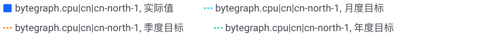 |
| 多计费项图例 | 先按图表的计费项展示顺序分组；Top N 场景沿用计费项排名。每个计费项内仍先实际值、再目标值，展示完一组后再展示下一组；换行、翻页均延续此顺序。 | cpu, 实际值 → cpu, 月度目标 → cpu, 季度目标 → mem, 实际值 → mem, 月度目标 → mem, 季度目标。
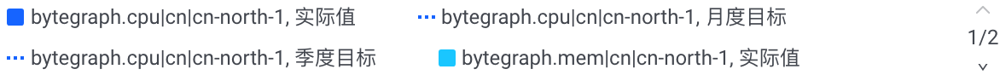 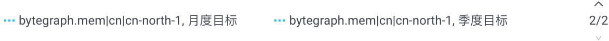 |
| 单／多计费项 Tooltip | 顶部展示当前月份，内容逐行沿用图例的计费项分组及指标顺序。不会按悬停月份的数值大小重新排序；排除或仅展示后，只保留可见系列，剩余系列的相对顺序不变。Tooltip 不受图例当前页限制。 | 月份：6月；依次展示 cpu 的实际值、目标值，再展示 mem 的实际值、目标值。
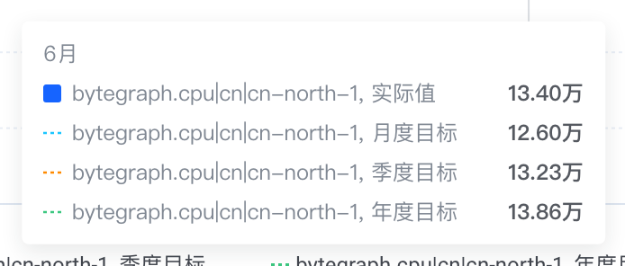 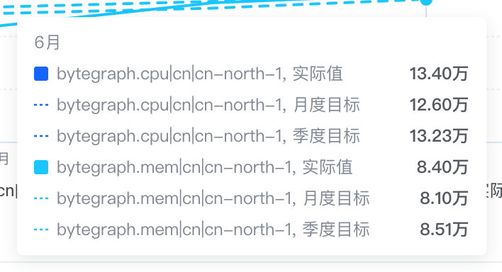 |
| 单价类月趋势图 | 每个计费项内按「测算单价 → 目标单价 → 偏差幅度」展示；累计口径按「累计测算单价 → 目标单价 → 累计偏差幅度」展示。图例与 Tooltip 顺序一致。 | cpu, 测算单价 → cpu, 目标单价 → cpu, 偏差幅度 → mem, 测算单价 → mem, 目标单价 → mem, 偏差幅度。
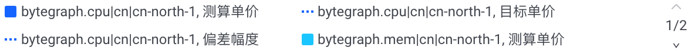 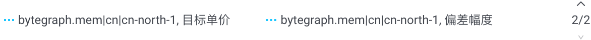 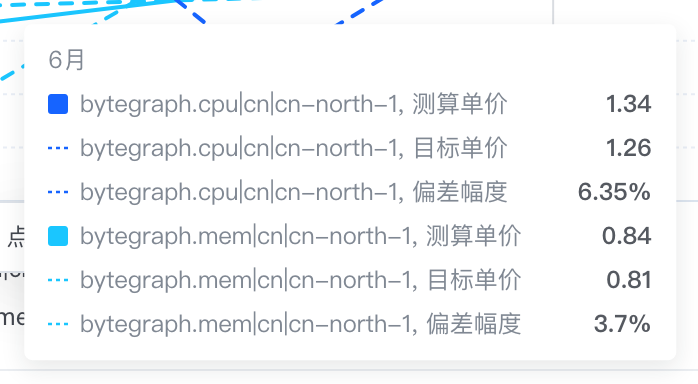 |
上表示例省略大区、售卖区域以便阅读；实际名称仍按「计费项|大区|售卖区域, 指标」展示，不支持售卖区域时省略该维度。
Tooltip 大小与内容样式
| 区域 | 统一规格 | 内容处理 |
|---|---|---|
| 整体宽高 | 宽度随内容自适应，最大 min(400px, 100vw - 24px)；高度随内容自适应，最大 min(500px, 100vh - 24px)。400 × 500px 是上限，不是固定尺寸。 | 窄屏时收缩到视口内；不因系列增多而无限放大。 |
| 容器与间距 | 白底、4px 圆角、阴影；上下内边距 8px，左右 12px；相对悬停点偏移 10px。 | 月份标题位于顶部，系列内容位于下方。 |
| 内容行 | 统一 12px 字号、20px 行高；行间距 2px；色块与名称间隔 6px，名称与数值间隔 28px。 | 每行依次为「色块 / 系列名称 / 数值」，名称左对齐，数值右对齐且不换行；数值加粗。 |
| 名称与标记 | 名称使用次级灰色，支持长名称自动换行；实际值标记为 10 × 10px 色块，目标值标记为同色虚线。 | 完整展示系列名称，不以省略号截断；换行后该行高度自适应，名称与数值仍对应同一行。 |
| 内容超高 | 达到高度上限后，系列内容区纵向滚动，月份标题保持可见；不出现横向滚动条。 | 展示全部可见系列，不按固定条数截断。点击图表固定 Tooltip 后，可移入内容区滚动查看。 |
图表空态
季度目标偏差趋势
单位：人民币空态直接复用 AnalysisChart 与 BABI IconEmptyChart，单位仅显示「人民币」，保留标题和全屏入口；不展示图例。独立打开空态示例。
空态样式规格
| 区域 | 样式 | 展示约束 |
|---|---|---|
| 图表容器 | 白色背景；1px 边框 --color-border-2；4px 圆角；16px 内边距 | 保留图表标题、全屏入口与单位；空态示例单位仅为人民币 |
| 空态绘图区 | analysis-chart-empty-slot：flex 水平、垂直居中 | 沿用图表 height 参数与卡片布局，默认卡片高 352px；不通过空态自身 min-height 或上下 padding 额外撑高 |
| 空态内容组 | 纵向排列；宽度 100%；图标与文案间距 8px；左右 padding 60px；上下 padding 0；min-height 0 | 图标和文案作为一个整体在绘图区居中 |
| 空态图标 | IconEmptyChart，固定 80 × 80px | 保持组件自带的渐变与多色，不启用 useCurrentColor；不随宽屏放大到 96px |
| 空态文案 | 「暂无可用数据」；13px / 22px；字重 400；--color-text-3；最大宽度 520px | 居中展示单段文案，不额外添加「暂无数据」标题，不增加操作按钮 |
| 坐标轴、曲线与图例 | 空态不渲染 VChart，不展示图例 | 保留绘图区高度；不绘制假曲线、零值或坐标轴来填充空白 |
状态切换规则
当前实现以 values.some(v => v.value !== null) 判断是否有图表数据。values 为空数组或所有 value 为 null 时，显示本页图表空态；数值 0 是有效值，不进入空态。
判断基于原始 values，而不是图例筛选后的 filtered。用户隐藏全部系列时仍保留图表和图例，以便再次开启系列；不切换成本页空态。
前端实现参考
const hasChartData = values.some(v => v.value !== null);
{hasChartData ? (
<div style={{ height }}>
<VChart spec={spec} />
</div>
) : (
<div className="analysis-chart-empty-slot" style={{ height }}>
<EmptyState text="暂无可用数据" kind="chart" size={80} />
</div>
)}
{hasChartData && <div className="chart-legend">…</div>}同步来源：src/pages/analysisUI.tsx 的 AnalysisChart / EmptyState，以及 src/pages/analysis.css 的图表与空态样式。图表仍使用 VisActor VChart；本次仅补充交互说明，不修改数据逻辑。
拓扑图 Playground
Figma样式拓扑图容器与画布宽度均等于页面内容区宽度；标题行固定48px，实际画布高度＝屏幕高度−300px−48px。示例固定预览高度，动态宽高仅标注计算规则。局部间距按100%节点尺寸测量；子树包围盒包含该父指标下方的全部节点，不包含父指标、连线、展开控制器及阴影。独立打开间距示例。
| 间距类型 | 当前规则 | 对应场景 |
|---|---|---|
| 拓扑图容器宽度与标题行 | 容器宽度＝页面内容区宽度，与画布同宽；标题行固定 48px（包含底部分隔线）。容器高度＝屏幕高度−300px。 | 所有场景；窗口宽高变化 |
| 画布可视区域宽高 | 宽度＝页面内容区宽度；高度＝屏幕高度−300px−48px，即 calc(100vh - 348px)。动态宽高仅展示规则，不展示当前计算出的像素值。 | 所有场景；窗口宽高变化 |
| 节点与运算符 | 普通行中运算符两侧各16px，可见圆形32px；两个指标之间合计64px。展开后会因子树预留宽度增加。 | 普通指标与运算符、相邻兄弟子树展开 |
| 兄弟子树包围盒 | 兄弟展开子树间距80px，画布中以编号尺寸线标注。按各自全部下级节点的联合边界测量；不能直接用上层卡片之间的距离代替。 | 相邻兄弟子树展开、不同宽度子树展开 |
| 父卡片与下层 | 层间基准80px；展开圆形向下突出14px。单层、双层嵌套中的指标顶边另按整行对齐规则放置，查看示例中的实时尺寸。 | 普通指标、单指标函数、双层嵌套公式 |
| 函数和括号包裹层 | 左右及底部彩色细边2px；白色层左右内边距8px、上下6px。嵌套内容按同行最深同类元素对齐。 | 单指标函数、常量与括号表达式、双层嵌套公式 |
| 指标卡片内部 | 名称与公式按实际文本行框测量；切换目标行数可查看卡片高度和周围间距变化。 | 所有场景；目标行数0、1、3 |
节点 Hover 与光标
| 截图标注 | 节点 / 区域 | Hover 触发条件与内容 | 光标 | 点击行为 |
|---|---|---|---|---|
|
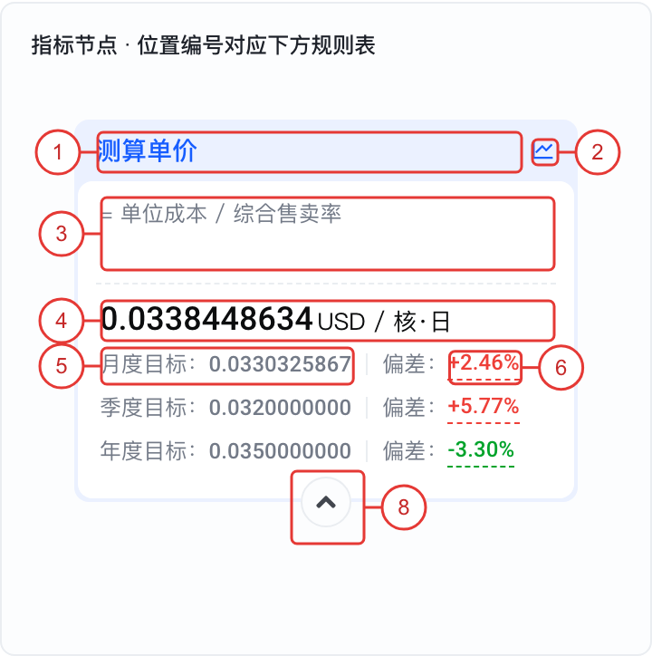 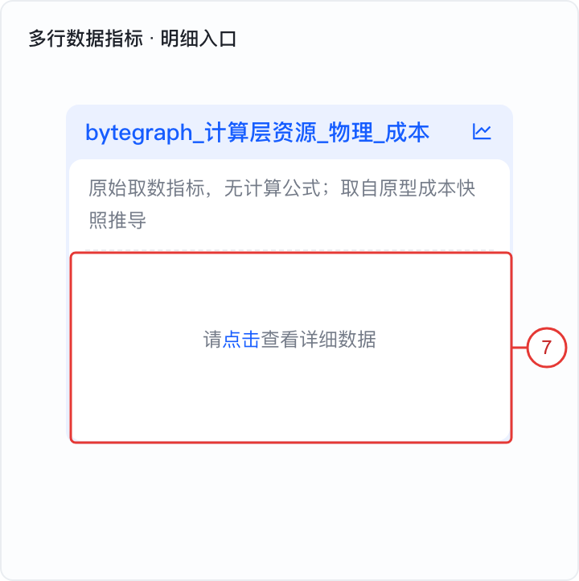 |
指标 · 蓝色标题行中的名称 | 悬停名称文字即可显示完整指标名称和指标解释提示，不要求文字被截断。当前示例提示为“调用统一的指标解释卡片”。 | 手形（pointer） | 名称本身无点击操作。 |
| 指标 · 右上角月趋势图标 | 显示“查看月趋势”；仅支持趋势的指标展示此图标。 | 手形（pointer） | 查看对应指标的月趋势。 | |
| 指标 · 公式文字 | 仅公式超出两行或可见宽度、被截断时，显示完整公式；未截断时不弹出。 | 截断时为手形（pointer）；未截断时为默认箭头（default）。 | 无。 | |
| 指标 · 实际值与单位 | 不弹出提示；即使文字被省略，也没有全文浮层。 | 默认箭头（default） | 无。 | |
| 指标 · 月度 / 季度 / 年度目标名称与目标值 | 不弹出提示。 | 默认箭头（default） | 无。 | |
| 指标 · 目标行中的偏差数值 | 悬停带虚线下划线的偏差值，显示对应偏差的计算公式、代入值和结果；无法计算时显示原因。 | 手形（pointer） | 无；计算说明通过 Hover 展示。 | |
| 指标 · “请点击查看详细数据”区域 | 仅多行数据指标显示；无提示浮层，悬停时“点击”文字变色。 | 整个按钮区域为手形（pointer）。 | 打开指标详细数据。 | |
| 指标 · 下方展开 / 收起圆形按钮 | 仅有下级的指标显示；按当前状态提示“展开下层节点”或“收起下层节点”。方案三 Hover 时箭头变为 primary-5，移出恢复。 | 手形（pointer） | 展开或收起下级节点。 | |
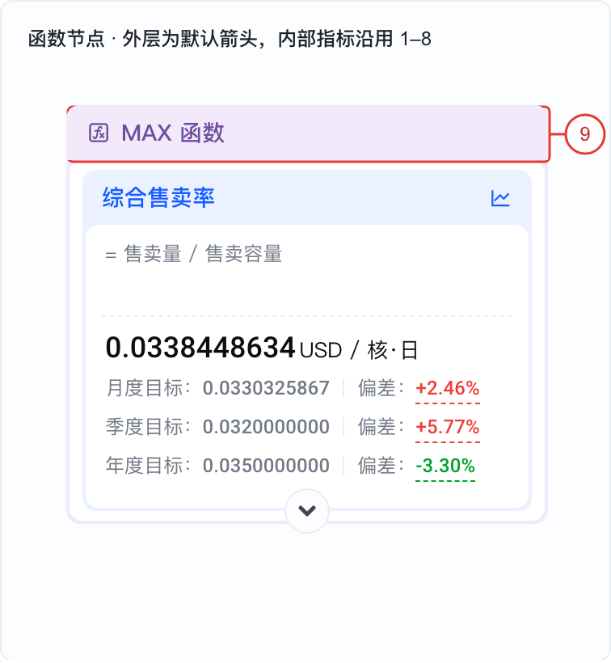 |
函数 · 标题文字、图标、彩色外框与白色留白 | 不弹出提示。单指标函数和公式函数均如此；内部指标、运算符、常量分别沿用各自规则。 | 默认箭头（default） | 外层无点击操作。 |
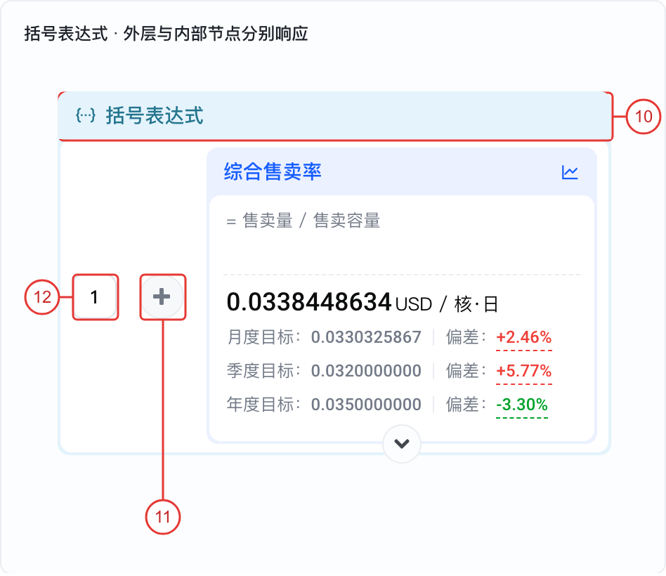 |
括号表达式 · 标题文字、三点图标、彩色外框与白色留白 | 不弹出提示；嵌套节点沿用各自规则。 | 默认箭头（default） | 外层无点击操作。 |
| 计算式子 · 加 / 减 / 乘 / 除圆形节点 | 不弹出提示。 | 默认箭头（default） | 无。 | |
| 常量 · 数值与外框 | 不弹出提示。 | 默认箭头（default） | 无。 |
指标卡片其余背景与留白为默认箭头，不触发提示。以上规则同样适用于函数、括号中的指标和多层嵌套；切换模型、目标行数或进入全屏后保持一致。手形只表示当前区域的交互提示，具体能否点击按表中“点击行为”区分。
指标公式拓扑图 - 按实际模型的示例
设计探索样式playground →画布交互
点击指标节点下方控制器展开直接下级；收起时隐藏全部后代，并重新计算树布局。
触控板和滚轮按滚动幅度连续缩放，以指针位置为中心；轻微手势只产生小幅变化，连续输入合并并限制单帧变化。拖拽平移、控制器缩放和一键适配均作用于画布；节点不可任意拖动。画布空白处为抓手光标（grab），按住拖拽时变为抓取光标（grabbing）。
父指标连接直接表达式项，运算符不生成纵向连线。纵向连线颜色 #D0D9E5，粗细 2px，圆角半径 16px；横向连线为 1.5px 虚线。
节点保持固定尺寸，通过画布平移或说明页横向滚动查看，不压缩公式和数值。